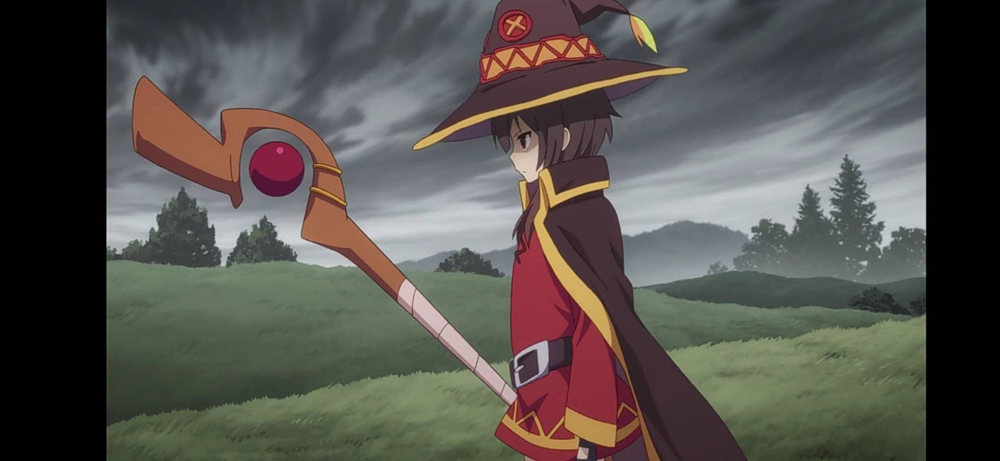
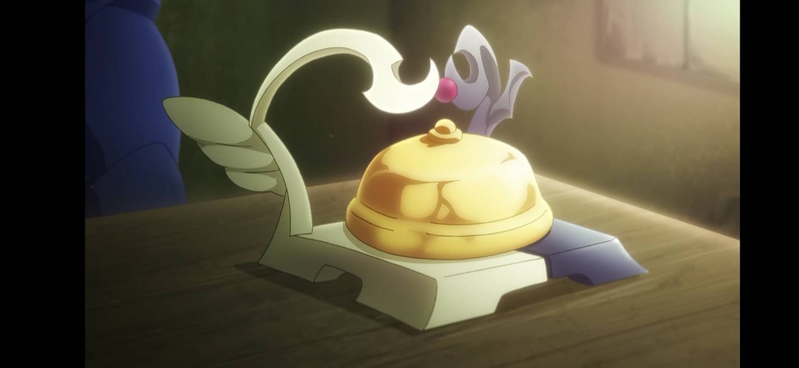
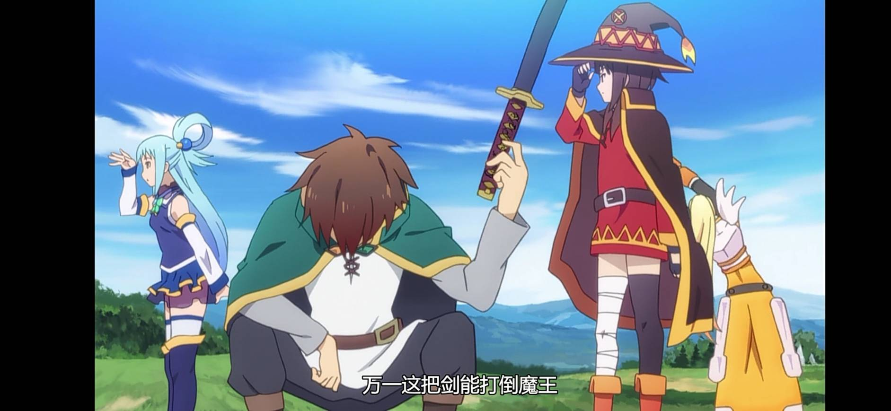
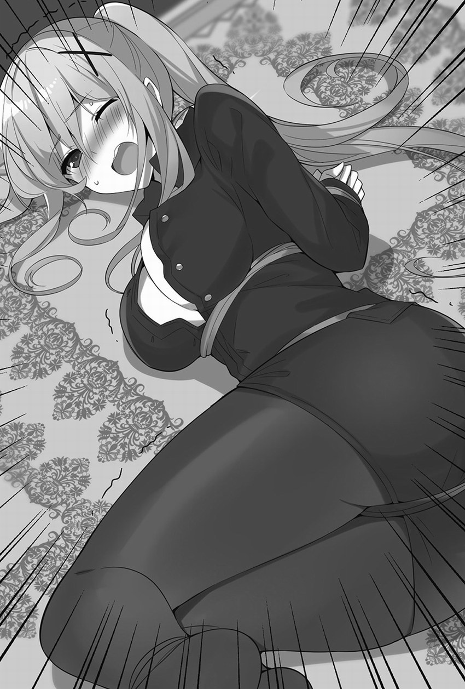
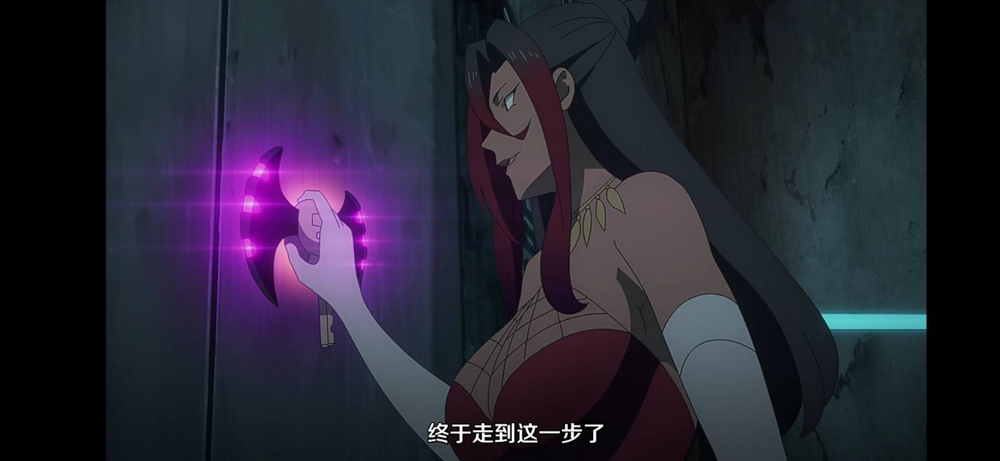
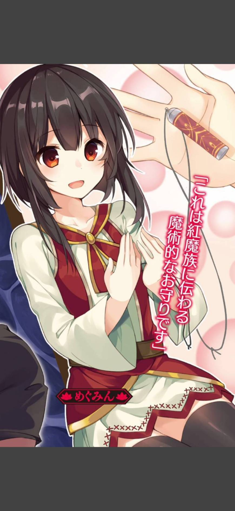

此網站由Playmaker特別製作(資料來源:維基百科)
神器 |
佐藤和真在異世界再製的現代道具 |
維茲魔道具店的商品 |
物品 |
能夠抵禦各種狀態異常，具備強大的耐久力，還施加了各式各樣的魔法在上面，這件羽衣算是身爲女神的證據。
每天在換成睡衣之後，阿克婭都用旅店的水桶裝清水洗滌她的羽衣，佐藤和真也曾經在曬稻草的地方看過她把羽衣和準備給馬吃的稻草晾在一起。
比阿克婭略高，上端是一朵花，發動魔法時上端的花會開放(動畫第一季第2、10集)，平常拿來當曬衣桿(動畫第二季ED)。
以瑪納礦石製作；瑪納礦石是一種稀有金屬，據說那具有特殊性質，製作法杖時加進去，就可以提升魔法的威力。
這是專門應付嗅覺敏銳的怪物用的道具，可以在冒險者公會買的到。
靠魔力驅動，這種魔道具所需的魔力並不算多，普通人也能夠使用。但或許是因爲要消耗魔力吧，使用後會感到有點疲倦，不過這種程度的代價也是無可奈何的事。
經常使用在訊問室以及法庭上的，能夠識破謊言的魔道具，只要發言者的話語之中含有謊言就會響。但是如果發言者堅信自己不是在說謊，則就算是謊言鈴鐺也不會響。阿克婭要說謊且讓鈴鐺會響的話，就必須要說出完全對不起自己良心的謊言，否則神聖光輝會壓過說謊的邪惡氣息。
和真以武士刀外型為基礎，請鐵匠鍛造出的佩刀，被惠惠強行命名為啾啾丸。
硬度極高的礦石，號稱只有爆裂魔法才能摧毀，達克妮絲的鎧甲是含有少量亞達曼礦石的特別訂製品。
盜賊系使出拘束功能時所使用的繩子
討伐多頭水蛇時使用的是鋼纜，佐藤和真訂做連靈體都可以拘束的秘銀繩索，而且用此繩索將達克妮絲拘束起來，讓達克妮絲獲得大滿足。
原本只有魔族在使用的魔道具，不過紅魔族的人們好像開始販賣這種結界破壞器了
。加工前外觀是普通的白色粉末；加工後因爲容易下咽和QQ彈彈的口感，在老人小孩之間人氣頗高的食物。由於食品的特性有很多人會不好好咀嚼就往下吞，所以每年都會有人被噎死，據說這是嫁進門的太太最愛送給丈母娘的東西。
以前在阿爾坎雷提亞，發生過魔王軍用瓊脂史萊姆進行的無差別恐怖襲擊，那是將城裡的溫泉全都變成瓊脂史萊姆的恐怖行徑。在那以後，國家就說魔王軍將瓊脂史萊姆混入溫泉肯定有什麽理由，瓊脂史萊姆必定有著什麽險惡的副作用，於是就展開了研究；最後就下達了在確認瓊脂史萊姆的安全性之前禁止食用的法令。
這是紅魔族傳統帶有魔法意義的護身符。要把擁有強大魔力的人的頭髮放進這個護身符裏，然後把這個交給同伴。是類似心理安慰意義的東西。
那是藉由消耗魔力來砍東西的妖刀。持有者的魔力越強，那把刀砍起東西來就越鋒利，但是那把刀的刀刃好像完全砍不了生物。瞎克之所以能夠只砍碎衣服，好像就是因爲這樣。阿克賽爾公會裏只有惠惠有足夠魔力砍東西，但是在眾人吹捧下拿著妖刀對付巨型蟾蜍的結果，就是被巨型蟾蜍一口吞了。
本來該有車輪的地方什麽都沒有，而且拉車的也不是馬，而是奔跑蜥蜴。念咒語之後可讓龍車離地漂浮十公分，這樣奔跑蜥蜴拉車就沒有阻力，速度可以非常的快
。使用前是一個可以單手拿起的四角形物體，往外一丟就會迅速形成一座貴族宅邸。連停放龍車的小屋都配備好，建在既沒有上水道也沒有下水道的空地上的宅子，一擰水龍頭卻能出水。是國家持有的最高級魔道具之一，還附有祛除怪物的結界，攜帶也很方便的。
回到最上面